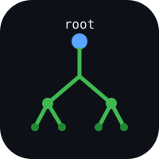

A clean dictionary that shows you where words actually come from — traced back through Latin, Greek, and Proto-Indo-European.
Follow a word backwards through each ancestor language, one branch at a time.
See the related words in other languages that share the same root.
Definitions and etymologies come from Wiktionary, parsed into a proper graph.
The big dictionary apps are covered in ads and have no etymology. This has neither problem.
Fast lookup first. The deep history is one tap away, never in the way.
One dataset, three places to read it. Nothing to sign up for.
No account, no install required. Open the web app and look something up.